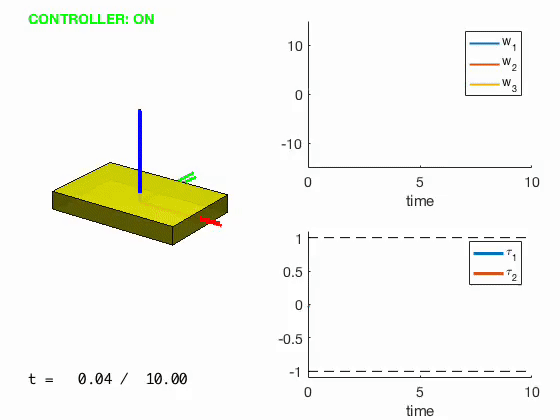
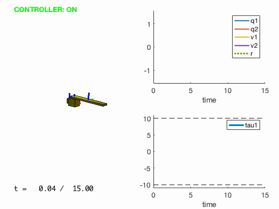
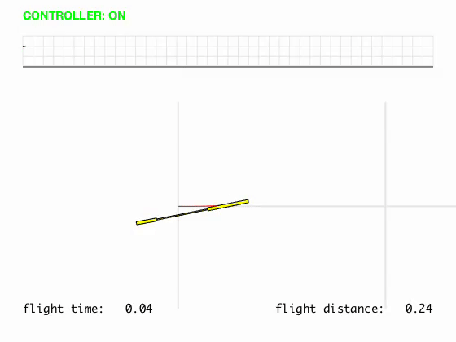

I was introduced into Aerospace Control Systems through the AE353 course at UIUC. I quickly grew an interest in the field and pursued research following the completion of the class. I am now part of a research team with the same professor creating a controller for quad-rotor drones in high winds and am also a tutor for the course. This page presents my work and history with control systems.
Aerospace Control Systems
The Class
AE353: Aerospace Control Systems focused on the modeling of linear dynamic systems; Laplace transform techniques; linear feedback control systems; and stability criteria; design techniques. For the duration of the course, we were tasked with "DesignProblems" in order to demonstrate our skills and apply the concepts to real world applications.
Design Problem 1
Spacecraft Stabilization
DesignProblem01 simulates the rotational motion of a spacecraft given a random initial angular velocity. The spacecraft is equipped with sensors to measure its angular velocity and actuators to apply a torque about two different axes. The goal is to stabilize the craft to an angular velocity of a spacecraft orbiting in synchronous rotation about the Earth.

Design Problem 2
Gravity-assisted Under Actuated Robotic Arm
DesignProblem02 simulates a “gravity-assisted under actuated robot arm” similar to the one proposed by Roy Assad. A motor applies a torque about the first joint while the second joint is allowed to spin freely. Equipped with optical encoders, the values for joint angles and joint velocities are known. The goal is to make the robot arm reach a stable equilibrium and then move along a trajectory.

Design Problem 3
Unpowered Glider in Flight
DesignProblem03 simulates an unpowered glider in flight designed with an elevator which controls an aircraft’s pitch during flight. An actuator allows the elevator’s angular rate to be specified. The goal is to make the glider fly the largest range possible if released at a height of approximately two meters with a forward speed of about six meters per second.

Design Problem 4
Two Wheeled Robot
DesignProblem04 simulates a two-wheeled robot equipped with actuators that enable control over the torque applied to each wheel; sensors which provide information regarding the forward speed, the turning rate, and the pitch angle of the chassis. The goal is to make the robot race along a randomly generated road at the fastest possible speed without crashing while experiencing a critical sensor time delay.